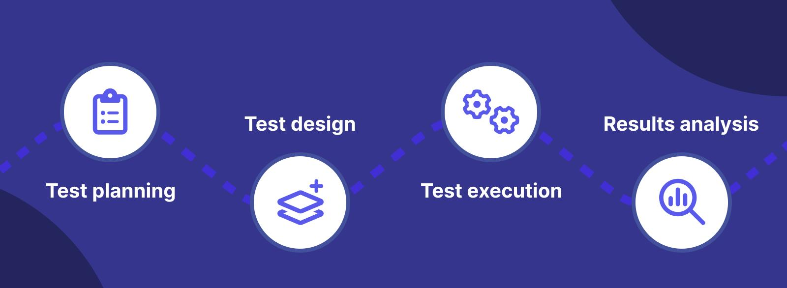

Blogs
In today's rapidly evolving digital landscape, ensuring the reliability and functionality of web applications is paramount. End-to-end testing plays a crucial role in validating the performance and user experience of these applications across various scenarios. In this comprehensive guide, we will delve into the fundamentals of end-to-end testing, its importance, best practices, and tools to streamline the process.
Understanding End-to-End Testing
End-to-end testing is a testing methodology that evaluates the entire software application from start to finish, simulating real user scenarios. Unlike unit or integration testing, which focuses on individual components or modules, end-to-end testing assesses the application's behaviour across multiple layers, including the frontend interface, backend logic, and interactions with external systems such as databases and APIs.
Benefits of End-to-End Testing
• quality assurance: End-to-end testing can help ensure that all parts of a software application are working together correctly and that the application is meeting its intended business requirements.• Increased confidence in the software: End-to-end testing can help increase the confidence that the software will function as expected in real-world scenarios, giving assurance to stakeholders that the application is reliable and stable.
• Faster detection of defects: End-to-end testing can help detect defects early in the development cycle, allowing developers to fix the issues before they become more difficult and costly to resolve.
• Reduced costs: End-to-end testing can help reduce the costs associated with defects and bugs detected late in the development cycle or after the application has been deployed.
• Better alignment with business requirements: End-to-end testing can help ensure that the application meets the business requirements, making it more likely that the application will be accepted by its intended users.
• More efficient testing process: End-to-end testing can help streamline the testing process by testing the application from a user’s perspective, rather than testing individual components in isolation, making it easier to identify and address issues that may arise.
Overall, end-to-end testing is an essential practice for ensuring the quality, reliability, and usability of software applications.
What is the E2E Testing Life Cycle?
The end-to-end testing life cycle consists of several phases that ensure a comprehensive approach to testing an entire software application from start to finish—here are the key phases of the E2E testing life cycle.
• Test Planning: After integration testing, define test objectives based on customer requirements and application architecture.
• Test Design: Set up the test environment, conduct risk and usage analysis, and create test cases, possibly using automation testing tools.
• Test Execution: Execute test cases, both locally and remotely, monitoring progress and consistency with the test plan.
• Results Analysis: Analyse test results, identify the root cause of bugs, and relay findings to the development team for resolution.

Steps to Perform End-to-End Testing
The steps below are required to initiate and complete any E2E test.• Analyse requirements. Have a clear idea of how the app is supposed to work in every aspect.
• Set up a test environment in alignment with all the requirements
• Analyse software and hardware requirements
• List down how every system needs to respond
• List down testing methods required to test these responses. Include clear descriptions of standards (language, tools, etc.) to be followed in each test.
• Design test cases
• Run tests, study, and save results
End-to-End Testing Example
Let’s say testers have to verify the functioning of a Gmail account. The following features have to be tested:• Type the URL into the address bar to launch the Gmail login page.
• Log into the account with valid credentials.
• Access Inbox. Open Read and Unread emails.
• Compose a new email.
• Reply to and forward an existing email.
• Open the Sent Items folder. Check emails there.
• Open the Spam folder. Check emails there.
• Log out of Gmail by clicking ‘logout’.
Main Challenges in End-to-End Testing
Naturally, detecting bugs in a complex workflow entails challenges. The two major ones are explained below:• Creating workflows: To examine an app’s workflow, test cases in an E2E test suite must be run in a particular sequence. This sequence must match the path of the end-user as they navigate through the app. Creating test suites to match this workflow can be taxing, especially since they usually involve creating and running thousands of tests.
• Accessing Test Environment: It is easy to test apps in dev environments. However, every application has to be tested in client or production environments. Chances are that prod environments are not always available for testing. Testers must install local agents and log into virtual machines even when they are. Testers must also prepare for and prevent issues like system updates that might interrupt test execution. The best way to access an ideal test environment is to test on a real device cloud.